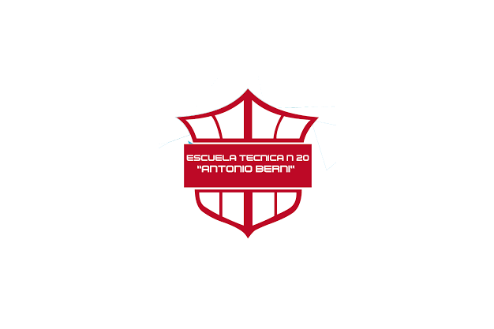

Preguntados
inicio
Nosotros
Sobre Nosotros
Creado por: Facundo Gabriel Perez Barrios (facundogabrielperez@sanluis.edu.ar)
Materia: Aplicacion en redes 6to año
Profesor/a: Pablo Velazquez
Institucion: Escuela Tecnica N°20 Antonio Berni

TEST